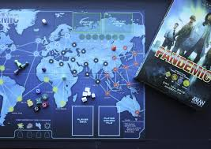

In Catan players aim to be the dominant force on the island of Catanby building settlements, roads, and cities. Each turn the player will roll the dice and collect resources that grow on the tiles that the platers are connect to. They will use these resources (Iron, Wood, Stone, Sheep, and Wheat) to build up their civilizations to get to 10 victory points and win the game.
Buy NowIn 7 Wonders you will play as the leader of one of the 7 great cities of the Ancient World. Each turn you can gather resources, develop commercial routes, and bolster your army. The player that builds the city that will transcend future times will win.
Buy Now In Pandemic several virulent diseases have broken out across the world simultaneously. The players will play as the disease-fighting specialists team who will treat disease hotspots while researching cures for the four plagues before they take over the world.
Buy Now